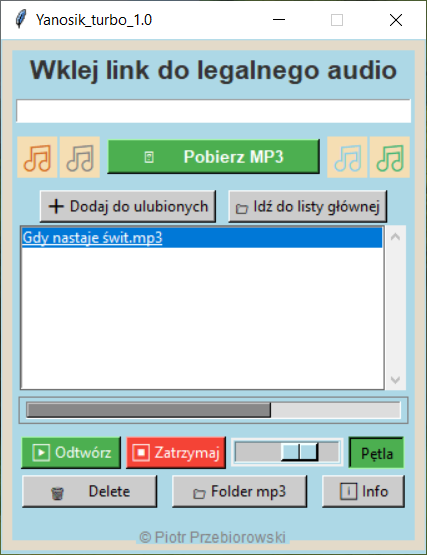
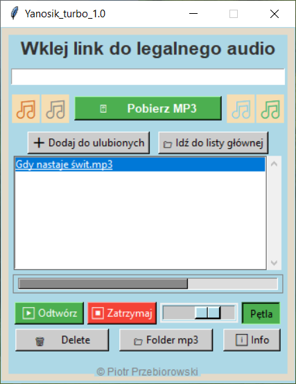
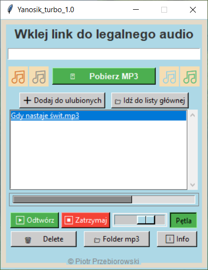

📸 Zrzuty ekranu
(Tutaj możesz wstawić obrazy)
 

Aplikacja desktopowa do pobierania i odtwarzania muzyki z pięknym, stylizowanym interfejsem.
Zaprojektowana w klasycznym stylu z nutką retro – połączenie prostoty z funkcjonalnością.
Repozytorium dokumentacyjne – kod źródłowy i wersja EXE nie są dostępne publicznie.
Aby skorzystać z aplikacji, wykonaj poniższe kroki:
Ikona Yanosik Turbo to stylizowany płomień – symbol energii, dynamiki i klasycznego charakteru aplikacji.
(Tutaj możesz wstawić obrazy)

Ten projekt ma charakter dokumentacyjny. Kod źródłowy .py oraz wersja .exe nie są publicznie udostępniane.
Wszelkie prawa zastrzeżone. Kopiowanie, modyfikowanie lub redystrybucja bez zgody autora są zabronione.
yanosik_turbo_2028/
├── Yanosik_turbo_FRAME_4NUTKI_OK_PLAYCOLOR_FINAL.py
├── README.md
├── LICENSE
├── output/
│ └── [tu zapisują się pobrane pliki .mp3]
├── icons/
│ └── yanosik_logo.png
└── screenshots/
├── screenshot1.png
└── screenshot2.png
Link do pobrania aplikacji zostanie udostępniony po kontakcie z autorem.